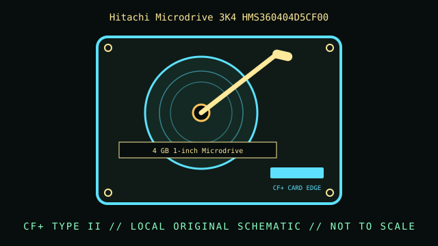

[ INDIVIDUAL COMPONENT // HARD DISK DRIVE ]
Hitachi Microdrive 3K4 HMS360404D5CF00
4 GB 1-inch Microdrive. This record is limited to the exact model and documented variant; related model numbers, revisions and capacities can have different interfaces and specifications.

IDENTIFICATION: Match the complete label, suffix, firmware and drive inquiry with the cited model documentation. Do not infer sector format or recording method from product family alone.
Verified model specifications
| Dedicated catalog subcategory | Compact and mobile HDDs |
|---|---|
| Exact model | Hitachi Microdrive 3K4 HMS360404D5CF00 |
| Product generation | 4 GB 1-inch Microdrive |
| Form factor | 1-inch mechanism in CompactFlash Type II card envelope; this classification is not a dimensional drawing. |
| Interface | CF+ Type II electrical/mechanical form; ATA-compatible host behavior as documented for Microdrive 3K4. |
| Capacity, performance, sector / recording details | 4 GB model; 3600 RPM and 512-byte logical sectors listed in the Microdrive 3K4 product brief. Exact firmware/host presentation should be read from the device. |
| Compatibility | Needs CF+ Type II clearance and a host that supports a rotating ATA Microdrive and its power draw. A CF card reader that supports flash only may not enumerate it reliably. |
Handling, service & preservation
- Avoid hot removal and shock while spinning; an accidental power loss can damage active writes. Image through a stable host and verify checksums; treat old flash-card readers as unproven.
- Photograph the full label, board marks, connectors, jumpers/carrier, and date/firmware codes before service; retain the exact model suffix with collection metadata.
- Never open a hard drive outside a qualified clean environment. Stop repeated power-on attempts if the unit clicks, drops offline, or develops read errors.
- Preserve source data by making independent copies and validating checksums; SMART/self-tests cannot guarantee reliability. Distinguish measured condition from manufacturer specifications.
Model-specific source
- HGST Microdrive 3K4 Feature Sheet / Product Brief (archival document)The archived 3K4 product brief covers 4 GB Microdrive model class; HMS360404D5CF00 is the exact listed model. Verify the suffix on the card label.
For variants with family manuals, use the model-specific table and document revision that matches the drive label.